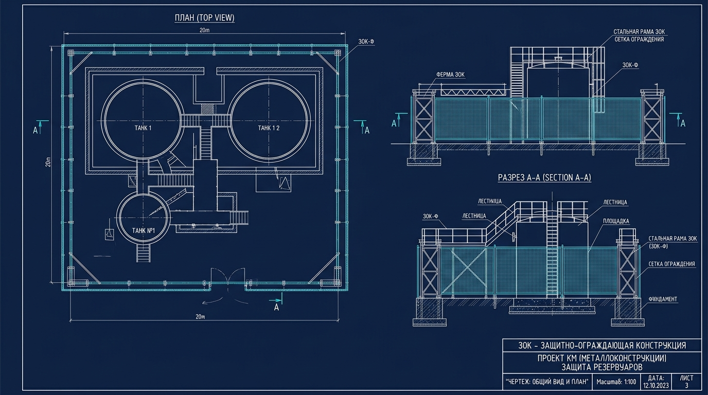

01

СП 542
Разработка проектной документации на ЗОК
Проектная документация разрабатывается согласно СП 542 (Свод правил. Защитные ограждающие конструкции от беспилотных летательных аппаратов). Полный комплект ПД/РД, согласованный с требованиями промышленной безопасности и условиями объекта Заказчика.
- Расчет ударной волны (включает в себя определение параметров, таких как давление, скорость и длительность воздействия волны, которые могут повлиять на конструкцию)
- Расчёт ветровых и снеговых нагрузок по СП 20.13330.2016
- Комплект рабочей документации (КМ / КМД) и 3D-модель
- Определение требуемой степени защиты (1–4 класс по СП 542)
- Сметная документация (ЛСС / ССР)